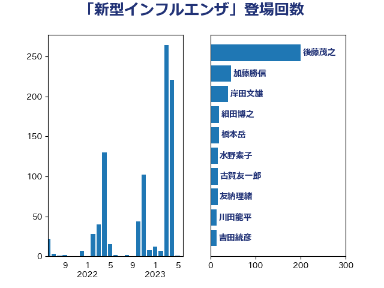

単語「新型インフルエンザ」

| 後藤茂之 | 自由民主党 | 200 回 |
| 加藤勝信 | 自由民主党 | 46 回 |
| 岸田文雄 | 自由民主党 | 39 回 |
| 細田博之 | 自由民主党 | 19 回 |
| 橋本岳 | 自由民主党 | 19 回 |
| 水野素子 | 立憲民主党 | 16 回 |
| 古賀友一郎 | 自由民主党 | 16 回 |
| 友納理緒 | 自由民主党 | 16 回 |
| 川田龍平 | 立憲民主党 | 14 回 |
| 吉田統彦 | 立憲民主党 | 14 回 |
| 中島克仁 | 立憲民主党 | 14 回 |
| 一谷勇一郎 | 日本維新の会 | 14 回 |
| 梅村聡 | 日本維新の会 | 12 回 |
| 大西英男 | 自由民主党 | 11 回 |
| 緒方林太郎 | 無所属 | 10 回 |
| 三ッ林裕巳 | 自由民主党 | 10 回 |
| 阿部司 | 日本維新の会 | 9 回 |
| 池下卓 | 日本維新の会 | 9 回 |
| 早稲田ゆき | 立憲民主党 | 9 回 |
| 山口俊一 | 自由民主党 | 9 回 |
| 田村まみ | 国民民主党 | 8 回 |
| 柴田巧 | 日本維新の会 | 8 回 |
| 阿部弘樹 | 日本維新の会 | 7 回 |
| 井上哲士 | 日本共産党 | 7 回 |
| 浅野哲 | 国民民主党 | 6 回 |
| 青柳陽一郎 | 立憲民主党 | 5 回 |
| 本田太郎 | 自由民主党 | 5 回 |
| 仁木博文 | 無所属 | 5 回 |
| 谷田川元 | 立憲民主党 | 4 回 |
| 福重隆浩 | 公明党 | 4 回 |
| 吉田とも代 | 日本維新の会 | 4 回 |
| 高木毅 | 自由民主党 | 3 回 |
| 金村龍那 | 日本維新の会 | 3 回 |
| 西岡秀子 | 国民民主党 | 3 回 |
| 芳賀道也 | 国民民主党 | 3 回 |
| 田中健 | 国民民主党 | 3 回 |
| 小沼巧 | 立憲民主党 | 3 回 |
| 太栄志 | 立憲民主党 | 3 回 |
| 塩田博昭 | 公明党 | 3 回 |
| 塩川鉄也 | 日本共産党 | 3 回 |
| 土田慎 | 自由民主党 | 3 回 |
| 阿部知子 | 立憲民主党 | 2 回 |
| 鈴木英敬 | 自由民主党 | 2 回 |
| 遠藤良太 | 日本維新の会 | 2 回 |
| 足立康史 | 日本維新の会 | 2 回 |
| 自見はなこ | 自由民主党 | 2 回 |
| 福島みずほ | 社会民主党 | 2 回 |
| 神谷政幸 | 自由民主党 | 2 回 |
| 畦元将吾 | 自由民主党 | 2 回 |
| 浜地雅一 | 公明党 | 2 回 |
| 松本尚 | 自由民主党 | 2 回 |
| 東徹 | 日本維新の会 | 2 回 |
| 本田顕子 | 自由民主党 | 2 回 |
| 木原誠二 | 自由民主党 | 2 回 |
| 島村大 | 自由民主党 | 2 回 |
| 小池晃 | 日本共産党 | 2 回 |
| 宮本徹 | 日本共産党 | 2 回 |
| 大石あきこ | れいわ新選組 | 2 回 |
| 堀内詔子 | 自由民主党 | 2 回 |
| 城井崇 | 立憲民主党 | 2 回 |
| 中川正春 | 立憲民主党 | 2 回 |
| 上田清司 | 国民民主党 | 2 回 |
| 三浦信祐 | 公明党 | 2 回 |
| 馬場伸幸 | 日本維新の会 | 1 回 |
| 長谷川淳二 | 自由民主党 | 1 回 |
| 長友慎治 | 国民民主党 | 1 回 |
| 野間健 | 立憲民主党 | 1 回 |
| 野上浩太郎 | 自由民主党 | 1 回 |
| 谷公一 | 自由民主党 | 1 回 |
| 西村康稔 | 自由民主党 | 1 回 |
| 藤井比早之 | 自由民主党 | 1 回 |
| 石田昌宏 | 自由民主党 | 1 回 |
| 石井苗子 | 日本維新の会 | 1 回 |
| 石井準一 | 自由民主党 | 1 回 |
| 田野瀬太道 | 無所属 | 1 回 |
| 泉健太 | 立憲民主党 | 1 回 |
| 河野太郎 | 自由民主党 | 1 回 |
| 河西宏一 | 公明党 | 1 回 |
| 沢田良 | 日本維新の会 | 1 回 |
| 森屋隆 | 立憲民主党 | 1 回 |
| 森屋宏 | 自由民主党 | 1 回 |
| 柳ヶ瀬裕文 | 日本維新の会 | 1 回 |
| 柚木道義 | 立憲民主党 | 1 回 |
| 枝野幸男 | 立憲民主党 | 1 回 |
| 松野明美 | 日本維新の会 | 1 回 |
| 松野博一 | 自由民主党 | 1 回 |
| 松本剛明 | 自由民主党 | 1 回 |
| 杉尾秀哉 | 立憲民主党 | 1 回 |
| 本庄知史 | 立憲民主党 | 1 回 |
| 斎藤嘉隆 | 立憲民主党 | 1 回 |
| 岸真紀子 | 立憲民主党 | 1 回 |
| 山際大志郎 | 自由民主党 | 1 回 |
| 山田宏 | 自由民主党 | 1 回 |
| 山本香苗 | 公明党 | 1 回 |
| 山下貴司 | 自由民主党 | 1 回 |
| 尾辻秀久 | 無所属 | 1 回 |
| 寺田稔 | 自由民主党 | 1 回 |
| 大島九州男 | れいわ新選組 | 1 回 |
| 塩崎彰久 | 自由民主党 | 1 回 |
| 堀場幸子 | 日本維新の会 | 1 回 |
| 和田政宗 | 自由民主党 | 1 回 |
| 吉田久美子 | 公明党 | 1 回 |
| 吉川沙織 | 立憲民主党 | 1 回 |
| 古屋範子 | 公明党 | 1 回 |
| 北側一雄 | 公明党 | 1 回 |
| 倉林明子 | 日本共産党 | 1 回 |
| 佐藤英道 | 公明党 | 1 回 |
| 伊東信久 | 日本維新の会 | 1 回 |
| 伊佐進一 | 公明党 | 1 回 |
| 井坂信彦 | 立憲民主党 | 1 回 |
| 中谷一馬 | 立憲民主党 | 1 回 |
| 中川貴元 | 自由民主党 | 1 回 |